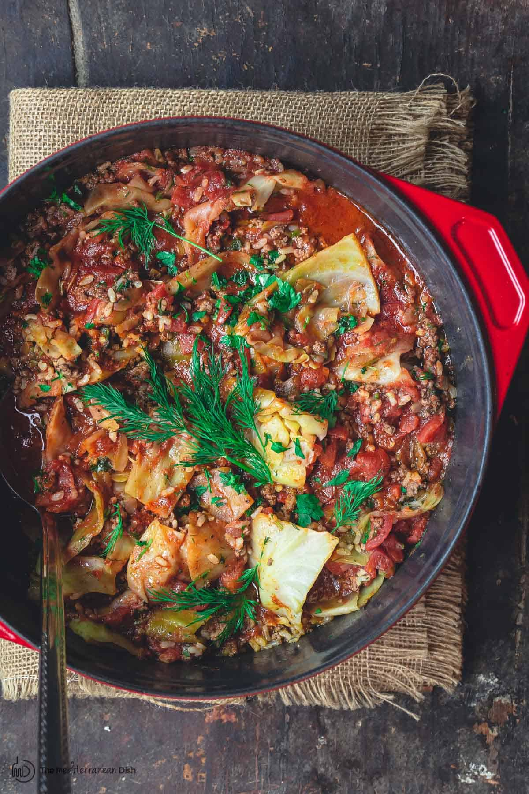

Spicy unstuffed cabbage

Description
This is a huge hit at potluck suppers. You can adjust the spiciness to
your own palate. I also think it just gets better the next day!
Ingredients
- 1 pound spicy bulk pork sausage
- 1 pound lean ground beef
- 1 (28 ounce) can diced tomatoes
- 1 onion, chopped
- 1 (6 ounce) can tomato paste
- 2 tablespoons distilled white vinegar
- 2 teaspoons chili powder
- ½ teaspoon salt
- ¼ teaspoon red pepper flakes, or more to taste
- 10 cups shredded cabbage